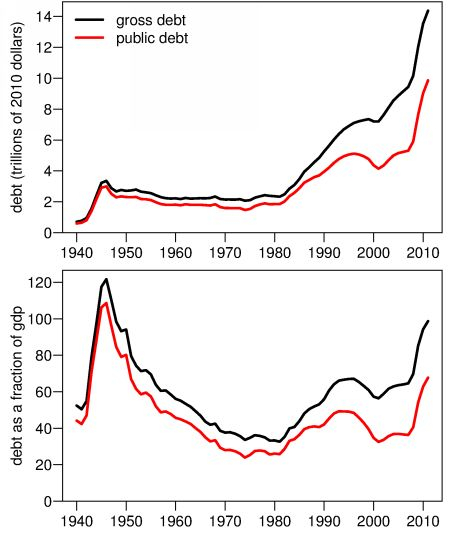
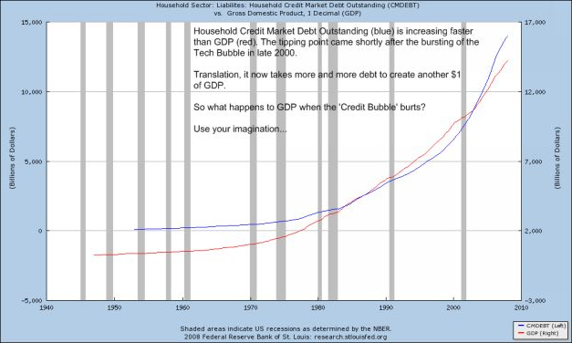
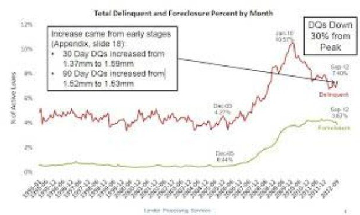

Chapter Twelve:
The West’s Achilles Heel
For China to pursue a further road to peaceful national and international economic growth and development, she must be keenly aware of the West’s Achilles Heel – The reality no one dares to say, namely that the United States and in a large part also the European Union economies of Western Europe are in terminal economic and demographic decline as hegemonic powers.
China’s Internal Achilles Heel
Before any serious discussion of the West’s Achilles Heel, it is important to introduce constructively how geopolitical strategists in the West view China’s domestic Achilles Heel. First and foremost, the West through its vast propaganda apparatus and “humanitarian” NGOs seeks to exploit a growing sense of alienation between the senior members of the ruling Communist Party of China and the people it is mandated to serve.
The emergence of such vast wealth potential inside China in such a brief span of three decades has understandably tempted more than one party senior official or municipal and local official to accumulate vast fortunes. It has reached such proportions that the London Economist magazine recently noted that there were more millionaires inside the Chinese Politburo than in the US Senate or Congress. Much of that clearly is owed to the rapidity of China’s ascent as a global economic force.
So long as the Party tolerates such vast wealth accumulation, it threatens its own ultimate demise as the legitimate governing political force. This reality was openly identified at the recent 18th Party Congress by President Hu. A collapse of CPC authority and legitimacy would spell catastrophe for China and for the world. Precisely to encourage such a collapse in perceived legitimacy is the goal of leading Western intelligence circles that use their politicized “pro-democracy” NGOs to encourage dissidence and discord.
There are several ways the Party leadership could respond to these growing pressures. One would be to deny there exists any legitimacy problem, or any officials who have misused their positions of public trust to unduly enrich themselves or their families. That would be a dangerous course today. A second way would be to single out one or several cases, label them exceptional, and punish them severely as in the recent excommunication of Bo Xilai.
The most uncomfortable but clearly more convincing approach would be to introduce financial transparency of party officials and family members, and to take convincing measures prohibiting unjust enrichment owing to misuse of party position. Genuine moral leadership in the new party leaders is the only convincing way. And it is possible. Leadership of the dominant political body in a land so vast and populous is one of the greatest responsibilities in this world today, and it requires men and women of the greatest integrity and concern for their people. China certainly has such men and women in influential positions, as I have had the good fortune to know.
How the Party and the Chinese people deal with the evident abuses of power is a matter for them and only them to decide. It is only important to note that the Western intelligence agencies and their NGOs are exploiting the scandals and abuses of power to the utmost to foster a growing climate of distrust towards the central government in Beijing. To ignore the real problems that exist will threaten the future not just of the CPC but also of China as a sovereign nation.
The experience of Putin in Russia, and the Iranian government after the US-incited “Green Revolution” of 2009, should also be taken seriously in Beijing to make it more difficult for NATO intelligence agencies to use real or imaginary corruption or dissidence. That would mean that China would ban all western-financed Non-Governmental-Organizations (NGOs), as well as ban all US and EU government aid, including USAID, Human Rights watch, National Endowment for Democracy or programs inside China which have any conceivable subversive role such as Western-financed Tibetan or Uygur “culture preservation” programs.
So-called “pro-freedom” NGOs have become one of the most strategic NATO weapons for destabilizing opponent regimes over the past two decades or more. In Egypt the military leaders reacted too late, and today have lost power to dangerous Muslim Brotherhood elements around president Mohamed Morsi.
In the period of opening to the West initiated in 1979, in many cases China unwittingly allowed Western intelligence services to take advantage of China’s openness. That can no longer be risked. China is in an undeclared war with a Western globalist adversary and must take measures appropriate to that reality. However, along with clamping down on such Western intervention, the Government has a great responsibility to educate the population, especially the youth as to what the concerns are, and what dangers to China’s stability are posed by the US and EU NGOs.
The West’s Financial Achilles Heel
The primary weakness of the West as represented most concretely by the sole superpower, the United States, is that the people, and their political and spiritual and business leaders, have lost their moral compass. At first glance this might sound silly as immoral empires from Caligula’s Rome to Hitler’s Germany have been fierce engines of destruction of other nations.
That moral erosion over the past thirty years and more has resulted from the early 1980’s “Reagan Revolution” – the introduction of “free market” unregulated capitalism, and the removal of prudent government controls on banking. It has laid the seeds of the greatest financial and banking crisis in world history. US and EU banks, despite reassuring public comments to the contrary, are deeper in their crisis than in 2007 when the US real estate bubble first collapsed. Little has changed since except the fact that the US Federal Reserve has engaged in unprecedented Quantitative Easing and buying up from the banks their toxic bad debts, in effect debasing the dollar as world reserve currency by the printing press as in 1923 Weimar Germany.
Decline and Fall[356]
A brief glance into the economic reasons for the fall of the Roman Empire some sixteen centuries ago was instructive. The roots of the decline and ultimate collapse of the Roman Empire – in its day also the world’s sole superpower – lay in the political decision by a ruling aristocracy, more accurately an oligarchy of wealth, to extend the bounds of empire through wars of conquest and plunder of foreign lands. They embarked on this to feed their private wealth and personal power, not for the greater good of the state. The economic model of the Empire of Rome was based on the plunder of conquered territories. As the empire expanded, it installed remote military garrisons to maintain control and increasingly relied on foreign mercenaries to man those garrisons.
In the process of military expansionism the Roman empire’s peasantry, the heart of the empire, became impoverished. They were forced to leave their farms, often for years to fight foreign wars of conquest. The south of Italy was devastated as one result. Those with money were able to buy land as the only stable investment, becoming huge latifundistas or landowners.
Internal decadence destroyed Rome
That led to the huge concentration of land in a few hands, and the land in turn was run by slaves captured in wars of conquest. Small farmers were bankrupted and forced to flee to Rome to attempt a living as proletarians, wage laborers. They had no voting rights or other civil rights. In the eyes of the rich, they were simply the “mob” that could be bought, manipulated, and directed to attack an opponent; they were the “demos,” the masses, the public. Roman “democracy” was all about mass manipulation in the service of empire.[357]
The government of Imperial Rome didn’t have a proper budget system, and squandered resources maintaining the empire while producing little of value. When the spoils from conquered territories were no longer enough to cover expenses, it turned to higher taxes, shifting the burden of the immense military structure onto the citizenry. Higher taxes forced many more small farmers to let their land go barren. To distract its citizens from the worsening conditions, the Rome’s ruling oligarchy handed out free wheat to the poor and entertained them with circuses, chariot races, throwing Christians to the lions and other entertainments – the notorious “bread and circuses” strategy of keeping unrest at bay.
Political offices increasingly were sold to those with wealth. The masses, in turn, “sold” their votes to various politicians for favors, the charade of democracy.
The next fundamental change that vitally wounded the Roman Empire was the shift from a draft army made up of farmer soldiers to one of paid professional career soldiers as the ever-more distant wars became more unpopular. That was not unlike what took place in America in the years after the Vietnam War when President Nixon abolished the draft in favor of an “all volunteer” Army.
As conditions for Roman soldiers in faraway wars became more onerous, more incentives were needed to staff the legions. Limiting of military service to citizens was dropped and Roman citizenship could be won in exchange for military service, not unlike what is taking place now as immigrant teenagers are being promised US citizenship if they risk their lives for America’s wars in Afghanistan, Iraq or elsewhere. At a certain point, Roman soldiers were forced to take an oath of service to their commander, not to the state.
Small farms were gradually replaced by huge latifundia, bought for booty, and the gap between the Roman rich and the poor increased. When the two brothers Gracchus tried in the second century AD to ease the growing gap between rich and the rest by introducing agriculture reforms that limited the powers of the wealthy Senators, they were assassinated by the men of wealth.
The Roman oligarchy grew increasingly degenerate. Towards the end of the reign of Roman emperors, gluttony was so commonplace among the rich that vomitoriums were constructed, so that people who had eaten or drunk too much could throw up and go and eat and drink some more.
Emperor Nero at one point declared, “Let us tax and tax again. Let us see to it that no one owns anything!” The purchasing of exotic spices, silks, and other luxuries from the Orient bled Rome of its gold, gold that didn’t return. Soon Rome didn’t have enough gold to produce coins. And so it debased its coins with lesser metals until there was no gold left. Another emperor, in order to reduce production and raise the price of wine, ordered the destruction of half of the vineyards in Rome’s provinces.
Over time the costs of maintaining this huge global Roman military structure became overwhelming. By the Third Century people were seeking every means to avoid the onerous taxes imposed to maintain the military. The army itself had doubled in size from the time of Augustus to the time of Diocletian, in the course of an inflationary spiral, inflation brought on by a systematic debasing of the gold and silver content of the Roman currency and a resulting chronic inflation. In addition, costs of the state administration had grown enormously. By the time of Diocletian there was not one emperor, but four emperors – which meant four imperial courts, four Praetorian Guards, four palaces, four complete imperial staffs. The cost of policing the Roman state became increasingly enormous.[358]
Ultimately, as its territorial expansion stalled and began to contract, less and less loot was available to support the empire’s global ambitions as well as its domestic economy. The outsourcing of the military led to lethargy, complacency, and decadence. Comparisons with the United States since the fruitless wars of Vietnam, Iraq and Afghanistan are only too clear.
The Roman Empire gradually lost power. Barbarians in the north frequently went on raids against the disintegrating empire. The Roman Empire became steeped in debt as emperors tried desperately to buy the loyalty of the army, and the moral condition of its subjects continued to spiral downward. Christians were persecuted, and large, bloodthirsty crowds would gather in arenas to cheer as various people died violent deaths. “Bread and circus” was the method of control.
The systematic debasement of the value of the Roman currency in the Third Century was the final destruction of the Empire. As confidence in the currency’s value declined, trade declined, crops failed and the military suffered what must have seemed like constant defeat.
The US dollar since the 1970’s has also undergone a massive debasement which has been partly hidden by the abandonment of the dollar gold standard in 1973 and the decision to float the dollar against other currencies. Only the fact that the US was the global military Superpower and the dollar still the reserve currency allowed Washington to force other nations such as Japan and in the past 20 years increasingly China to “finance” the US Government’s wars in Iraq and elsewhere, involuntarily, by allowing China to buy US Treasury debt, today well over $1.1 trillion. The hidden US dollar inflation of the past thirty or so years has reached a point where it is creating the greatest wealth divide in the American population in history as the wealthiest 1% get more and the 99% lose more, resulting in deep social splits, and protests such as Occupy Wall Street.
Since the senseless Vietnam War of the late 1960’s the American people have become more and more numb to the purpose of what had been a nation founded on the idea of liberty and freedom for all. The wars in Iraq and in Afghanistan and later against Libya find a nation deeply in debt with an economic base that gradually has been outsourced to Mexico, Eastern Europe and especially to China.
The American Debt Trap
America and Americans are caught increasingly in a devastating debt trap. Her politicians in Washington allowed major Wall Street banks free reign to loot and create fictitious wealth without regulation beginning in the 1970’s. Towards the close of 2012 in the wake of a re-election of a weary President Obama, Americans faced the greatest debt burden as a share of its GDP in its history. Including private and public government debt, total US debt burden stood at 336% of annual GDP. From 2005 through 2007 when the financial crisis began, US total debt, including real estate, increased by a staggering $11 trillion or almost 30% in only three years.[359]
As the two graphs show, US government debt as a nominal sum remained relatively constant from the end of World War II in 1945 until the end of the 1970’s. At that point the debt began an astronomical explosion from some $3 trillion to $14 trillion by 2011, an increase of some 500% in just 30 years. Government debt as a share of GDP by 2011 was as high as it was during the heavy debt years of the Second World War.
Much of the US Government debt is held by foreign governments, above all China, Japan, Saudi Arabia and Russia. Already in 2007 the US Comptroller General warned:
Foreign interests have more control over the US economy than Americans, leaving the country in a state that is financially imprudent. More and more of our debt is held by foreign countries – some of which are our allies and some are not. The huge holdings of American government debt by countries such as China and Saudi Arabia could leave a powerful financial weapon in the hands of countries that may be hostile to US corporate and diplomatic interests.[360]
That suggests China has potential leverage on the US financial system were she to decide to dump even a small portion of its holdings of US Treasury debt.
Private US debt is much higher now than during the Great Depression, and has been allowed to grow as if there were no consequences to borrowing, and no limit to what can be paid back in the future. After the Great Depression the US debt was about 20% of the GDP, by the end of World War II it was 40% (although during the war the gross debt was 100% of GDP). By the 1970s it was back down to 20%. Then during the Presidency of George W. Bush and two wars, US federal debt doubled from some $6 trillion in 2001 to $11 trillion in 2008.
The Achilles Heel from the record US debt levels is hit on many levels. Savings would go towards purchases of government debt, rather than investments in productive capital goods such as factories and computers, leading to lower output and incomes. Rising interest costs to sell the debt to the world will force reductions in government programs.
The greatest risk for the US economy is that the world will boycott future US debt sales forcing dramatic rises in US interest rates to sell its debt. That in turn will force major debt defaults and a crisis in the fragile US banking system. America is frequently called the “richest nation on earth,” but the reality is that the American people are living on borrowed money. Across the US economy, Government, corporate, and consumer debt are all at record levels. Private debt, which is debt from a private entity, such as a bank, has skyrocketed in the last three decades alone. The purchase of homes, automobiles, stocks, and other consumer goods on credit increased consumer spending, but compounded debt. Unlike in the 1930s Great Depression when the level of Federal Government debt was tiny, today that debt is well over 103% of GDP and rising rapidly.
US Fiscal “Cliff”
At the end of 2012 and the beginning of 2013, many major fiscal events were set to occur all at once in a foolish “shock therapy” attempt by the US Congress to bring the exponential rise of the Federal deficit and debt under control. They include the expiration of the 2001 and subsequent tax cuts, the ending of Government jobs programs and activation of a $1.2 trillion across-the-board “sequester,” an immediate and steep reduction in Medicare physician payments, the end of current Alternative Minimum Tax (AMT) patches, and the need to once again raise the country’s debt ceiling. This combination of pre-planned actions is what Federal Reserve Chairman Ben Bernanke called a “fiscal cliff.”
The planned combination of automatic Federal Budget cuts and tax increases will amount to $700 billion in 2013. Unless avoided, this could contract US gross domestic product by around 4.5 percent and plunge the economy back into depression.[361]
That pre-programmed new economic shock to the US economy would come on top of the continuing negative effect of the US real estate speculation bubble that burst in 2007 and is far from over in terms of its negative effects of mortgage payment defaults or home repossession by banks. More than five years into the first mortgage crisis, more than five million private homes across America are still in default or non-payment to banks of mortgages.[362]
Mortgage defaults have yet to return to normal after more than five years of crisis. Add to the real estate collapse across America the collapse of state revenues from the 50 states making up the United States. The worst case is the nation’s largest state economically, California, whose own GDP would make it the eighth largest GDP in the world were California a nation. Almost six years into the crisis, the California state budget deficit has doubled to $16 billion for 2012. By law California cannot run a deficit meaning either $16 billion of state budget cuts or $16 billion of new taxes or both. The 2012 California budget crisis followed three straight budgets that made deep cuts in aid to public education, the state university system and social welfare programs, as well as repeated worker layoffs as California tried, in vain, to find its balance.[363]
The US dollar at the beginning of 2013 was dangerously near to conditions for a dollar panic selloff. The US has a massive current account deficit, meaning the US needs investment from abroad simply to stop the dollar from falling. As a result, the US is required to generate economic growth to attract capital from abroad. The euro doesn’t have this same pressure as most of its trade is within the EU. Only the constant attention to the Euro crisis in the past three years has prevented a dollar free-fall.
And a worsening Eurozone crisis
Simultaneously, pressed on by a Troika consisting of the EU, European Central Bank and IMF, Greece and other weak Eurozone economies are being forced into a ruthless self-defeating austerity that has resulted in official unemployment above 25% in both Greece and Spain. EU major banks are on the brink of insolvency, held afloat only via emergency measures from the ECB.
The EU countries are themselves in a different but every bit as grave debt trap, fed by the surplus of cheap dollar credit from the US Federal Reserve during the Greenspan era. The deeper Eurozone structural crisis by the end of 2012 was still getting worse. Loan demand had crashed 50% in Italy and France. Spain’s unemployment was 26% and headed to 30% in 2013. The strategy of Berlin, of the European Central Bank and IMF was to save the Euro and the major banks tied to the Euro at all costs, even to that of the population and economies of the EU.[364] Recent IMF reports indicated that EU major banks could face a credit contraction of more than€4 trillion if the overall economic situation continues to decline. That would plunge all EU countries into deep recession, including Germany which depends on the export market of the EU for some 60% of all its exports.
The essential point to understand from the vantage point of China was that the once-great economic powerhouses of the United States and Western Europe by 2013 were choking in unpayable debt, corruption and economic and moral decline. That reality was essential for China to formulate an effective economic strategy going forward that could effectively defuse EU complicity in any future NATO provocations against China.
[356] This account of the fall of the Roman Empire is reproduced from the author’s book Gods of Money, pp. 377-379
[357] Mateusz Romanowski, “Ancient Rome: Downfall of the Empire,” http://www.ancient-rome.biz/downfall.html.
[358] Josef Peden, Inflation and the Fall of the Roman Empire, Mises Institute, October 27, 1984, http://www.marketoracle.co.uk/Article12831.html.
[359] Rex Nutting, “U.S. debt load falling at fastest pace since 1950s,” June 08, 2012, MarketWatch
[360] David Walker, the US Comptroller General, 23 July 2007, http://business.timesonline.co.uk/tol/business/markets/united_states/article2120735.ece
[361] The Committee for a Responsible Federal Budget, “Between a Mountain of Debt and a Fiscal Cliff,” http://crfb.org/sites/default/files/Between_a_Mountain_of_Debt_and_a_Fiscal_Cliff.pdf
[362] Tom Lawler, “REO inventory of ‘the F’s’ and PLS,” November 8, 2012, http://www.calculatedriskblog.com/2012/11/lawler-reo-inventory-of-fs-and-pls.html
[363] New York Times, “California Budget Crisis,” November 6, 2012, http://topics.nytimes.com/topics/news/national/usstatesterritoriesandpossessions/california/budget_crisis_2008_09/index.html
[364] Ambrose Evans Pritchard, “Who will stop the Sado-Monetarists as jobless youth hits 58pc in Greece?”, The Telegraph, November 8, 2012, http://blogs.telegraph.co.uk/finance/ambroseevans-pritchard/100021180/who-will-stop-the-sado-monetarists-as-jobless-youth-hits-58pc-in-greece/